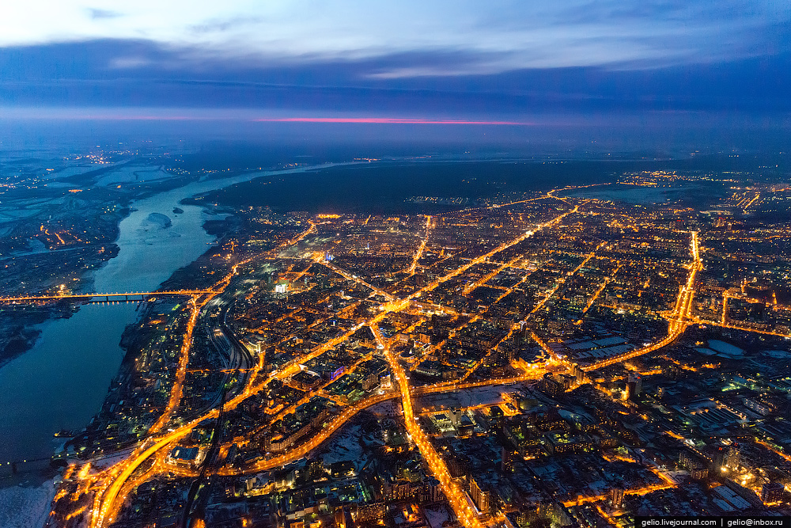
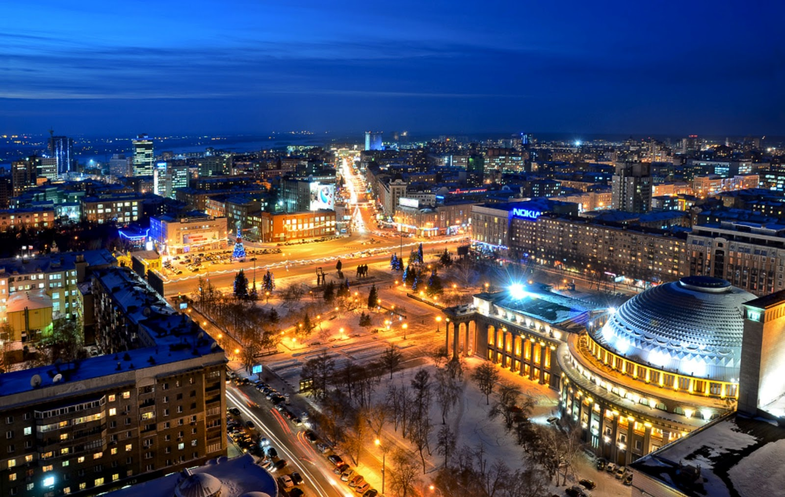
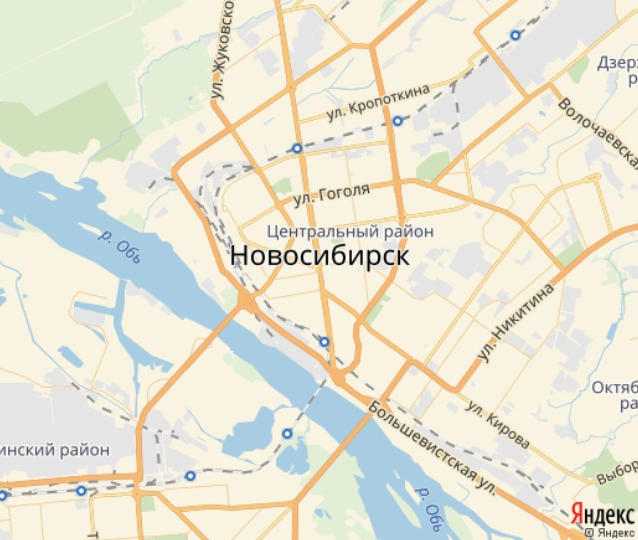

Новосибирск

Новосиби́рск — третий по численности населения город России.Административный центр Сибирского федерального округа, Новосибирской области и Новосибирского района (в состав последнего не входит), центр Западно-Сибирского экономического района. Город областного значения, образует муниципальное образование город Новосибирск со статусом городского округа, являющегося самым населённым муниципальным образованием в стране. Также в Новосибирске находятся Представительство Президента Российской Федерации в Сибирском федеральном округе, Управление Западно-Сибирской железной дороги, Президиум Сибирского отделения Российской академии наук и Кассационный военный суд Российской Федерации.

Город является центром Новосибирской агломерации. Крупнейший торговый, деловой, культурный, транспортный, образовательный и научный центр Сибири. Часто Новосибирск именуют неофициально «Столицей Сибири».Новосибирск основан в 1893 году, статус города получил 28 декабря 1903 (10 января 1904) года. Численность населения — 1 625 600 человек (2020 г.), благодаря чему он является самым многонаселённым городом азиатской части России.

Город расположен на обоих берегах реки Обь рядом с Новосибирским водохранилищем, образованным на Оби, перегороженной плотиной Новосибирской ГЭС. Территория города составляет 502,7 км².